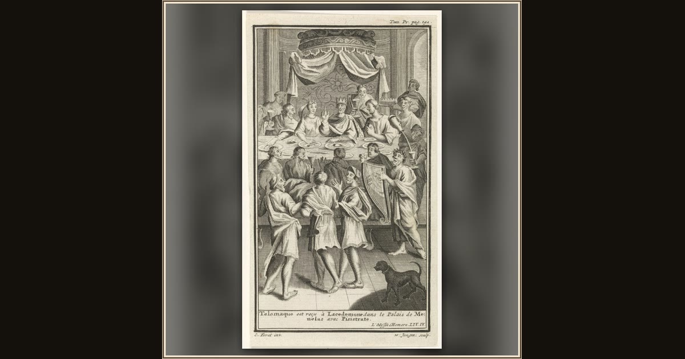

Telemachus in the Palace of Menelaus
Anonymous (book illustration) · 1712–1744 · Rijksmuseum · Amsterdam, Netherlands
In Sparta, Telemachus takes leave of King Menelaus and Helen and hurries down to his ship, eager to sail back home to Ithaca at last. Explore its place in Book XV of the Odyssey.